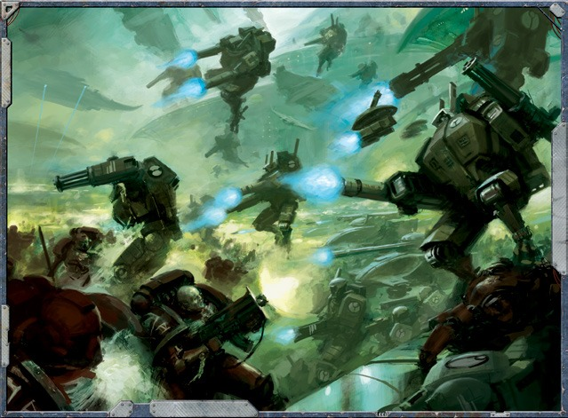
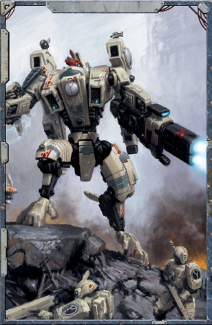
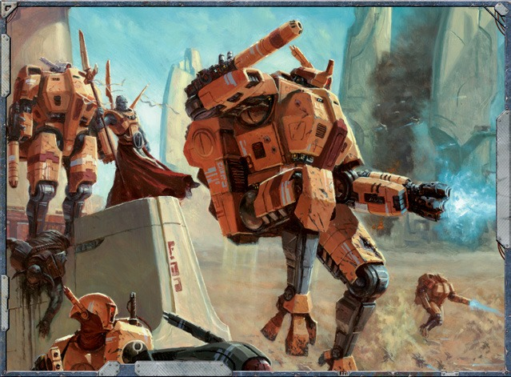

“你的打击应该在你的猎物意识到它发动之前就已 然命中。在他知道你存在之前杀死你的敌人・他就 永远不会对你构成威胁。”
夏斯’欧'海德’乌尔（诡击指挥官）
钛族的战争哲学可能围绕着古老的、永恒的原则， 但它的实践却牢牢地植根于最近的创新。这些作品中 最引人注目和最具标志性的是战斗服，正是这些人形 机器在残酷的第41个千年将钛族人与其他物种之间的 战场夷为平地。钛星人可能缺乏兽人的蛮力、灵族的 优雅或人类对力量过度狂热的野蛮倾向，但战斗服可 以让单个战士弥补这些缺点，并通过技术创新的力量 战胜那些在身体上占优的敌人。
钛族人在第一次天穹扩张期间开始开发战斗服技术 其第一代战斗服，T系列，在钛帝国爆炸式扩张的时 期被投入使用。虽然与他们的后代相比笨重且效率低 下，但T系列让火氏族可以与超出其能力范围的敌人交 战，也为土氏族提供了一个重要的机会来开拓和实地 测试许多对后续模型的开发至关重要的技术。
在相对较短的时间内，以化石燃料驱动的T系列被 淘汰，取而代之的是�S列。这一代的主要创新是用能 够为危机战斗服提供更多能量并让它们在战场上运行 更长时间的裂变反应堆取代了效率相对较低的能量来 源。尽管V系列的早期型号给驾驶员造成了致命的辐射 ,但后来的型号逐渐解决了这个问题，从此，战斗服 开始成为钛帝国军队的支柱。
30
尽管它们有着如此的体积和力量，战斗服在携带 专业设备上的能力仍然有其上限，特别是在武器 和实验技术方面。战斗服通常只能配备与挂点一 样多的支援系统和/或武器系统。每种战斗服机 架的简介中都详细说明了在那些典型范例中他们 所拥有的挂点数量（参见第943顶）。
飞行系统的发展也是钛族战斗服历史上的一个关 键时刻。这种机动性上的巨大进步是在第二次天穹 扩张期间出现的，在那时，战斗服早已成为了钛帝 国战争学说中不可或缺的一部分。战斗服的机动性 所提供的战术和战略灵活性将被证明是钛帝国成功 对抗人类帝国庞大而压倒性力量的关键。
钛帝国许多最伟大的英雄都是战斗服驾驶员，他 们是获得指挥官军衔并将自己的名字铭刻在火氏族 记忆中的战士。影阳指挥官、夏斯’欧‘莱莫等传 奇人物和备受争议的远见指挥官的一系列故事。都 成为了编织钛帝国军事历史这块大幕的重要丝线。 虽然这些士兵无疑都是通过战术和战略上的敏锐而 获得了这样的名声，但尽管如此火氏族依然因为他 们在战场上所表现出的个人力量和勇气而崇拜他们 的领袖

战斗服，首先来说是一种非常先进的护甲。一台 战斗服在所有方面都表现得像一套穿在身上的盔 甲，并且还提供了许多本章将详细介绍的其他好 处。
战斗服这一名称实际上涵盖了相当广泛的一 系列武装平台，从灵活的X25隐形服到笨重的 X88舷炮战斗服，从设计用于清理太空废船的中 型X46先锋战斗服到能够以一己之力围攻要塞的 高耸入云的XW104激流战斗服。
尽管如此，许多战斗服都共享着一系列关键 系统，其中每个系统都为战斗服提供某些能力。 如果这些系统中的一个被破坏下线，它就会停止 提供它所带来的增益，并且在它被修复之前不能 使用。
身穿战斗服的探索者每回合第一次遭受致命伤时，掷1d10： 如果结果为9或更高，他将正常遭受致命伤害。 否则，他不会受到该致命伤害；相反，他应该在表1-5： 战斗服致命伤表上进行投掷并应用结果。
移除战斗服致命伤效果需要通过一个困雅(-20)难度的科技 的斜技使用或生计（军械士）检定。如果这名技师在 检定中成功，他会移除一个他所选定的战斗服致命伤效果， 再加上他在检定中获得的每级成功度额外一个的战斗服致命伤效果。
在修复战斗服之前，将此表上的掷骰结果额外+10：
| d100结果 | 战斗服致命伤效果 |
|---|---|
| 01-30 | 这一击击穿了战斗服，撕碎了装甲。在修复战斗服之前，无法使用。 |
| 31-50 | 这一击撕裂了战斗服，砸碎了它的一件武器。战斗服的其中一个武器或支援系统（由攻击者选择）被禁用。在修复之前无法使用。 |
| 51-65 | 这一击击中了战斗服，破坏了它的一个关键系统。战斗服的其中一个支援或实验性系统（由攻击者选择）将失去功效，并且在修复之前无法使用。 |
| 66-80 | 这一击撕裂了装甲，毁坏了战斗服的一件武器并导致其弹药爆炸。战斗服的一件武器（由攻击者选择）被彻底摧毁，必须更换。此外，爆炸会禁用战斗服的两个支持或实验性系统（由攻击者选择），这些系统将会失能，并且在修复之前无法使用。 |
| 81-95 | 这一击擦过能量核心，在一阵电涌中将其暂时下线。驾驶员将受到无视装甲的1d10点能量伤害。此外，战斗服会关机并完全无法操作，直到驾驶员（或外部技术人员）投入一个完整行动并成功通过一次困难难度(-2的科技使用检定以使其系统重新上线。 |
| 96-99 | 这一击穿入战斗服并点燃其弹药，使其引爆。驾驶员在无视装甲的情况下遭受1d10+5能量伤害，并且战斗服的1d5个主要、支持或实验性系统（由攻击者选择）在修复前被禁用。 |
| 100或更高 | 这一击击中了燃料核心，破坏了其稳定性并导致灾难性过载。当反应堆发出最后一声尖叫时战斗服将立即爆炸化为一个火球和一堆致命的废金属块。爆炸对飞行员造成3d10+10点无视护甲的能量伤害，对1d10+10米范围内任何运气不佳的任何存在造成2d10+10能量伤害。 |
战斗服通常配备有一个传感器阵列，使驾驶员能够 选出战场上的关键细节，从远处的敌军行动到在完 的黑暗中滑行的外星生物。这些系统还旨在保护驾 员免受可能损害视力的辐射和光线爆发的伤害。
使用带有此主系统的战斗服的探索者可以获得黑阳 镜的增益（参见第27顶）。
战斗服让钛族战士比其他人更快、更强壮、更有韧 性。在驾驶战斗服时，探索者的力量属性和体型特质将 使用战斗服简介中列出的值。此外，驾驶员获得自动 稳定特质。如果这个主系统失效，任何驾驶战斗服的 探索者都会失去它所提供的增益，并且在修复之前无 法做出移动这一子类型的动作（退出装甲除外）。然 而，除非他退出战斗服，否则他的体型特征不会改变。
31
战斗服在设计上考虑到了通用性，并且可以部署 在许多不同的恶劣环境中，从酷热或严寒到真空的太 空环境无所不包。虽然装甲本身可能会因真正意义上 的极寒或极热而损坏，但在密封被破坏之前，穿戴者 可以免受有毒或恶劣环境的影响。
战斗服是完全环境密封的，它们的内部过滤系统 可以持续数天或更长时间。只要战斗服的电源正常运 作并且机体密封保持完好，这个主系统就可以为穿着 者提供可呼吸的空气和全面的保护。
在第二次天穹扩张期间开发、创新和完善的反重 力跳跃喷气背包在大多数战斗服的作战效能和整个钛 族战争学说中都发挥着极其重要的作用。喷气背包可 以让熟练的战士让他的战斗服在战场上翩翩起舞，突 然出现，射出致命的齐射火力，然后从敌人的视线中 再次消失。
穿着带有此主系统的战斗服的探索者可以进行一 次常规难度(+20)的飞控（个人）检定，以从任何高 度进行一次安全、引导式的落地又或是用一个短跳越 过挡在中间的地形（或敌人）・并在移动结束时着陆 。穿着带有此系统的战斗服的探索者也可以耗费一个 部分动作进行一次挑战难度(+0)的飞控（个人）检定 ,以获得飞行者(12)特质长达一分钟（或回合制时间 中的1d5+10轮)。
作为土氏族在感官设备上的创新之一，多重追踪 器旨在帮助驾驶员同时定位和监控多个威胁。多重追 踪器直接向操作员提供有关潜在目标和已识别目标的 大量信息，使他能够清晰而简洁地了解原本混乱的战 场。
使用带有多重追踪器的战斗服的探索者可以同时 使用发射两只手上的武器，就好像他拥有双持客天赋 一样。如果他已经拥有该天赋，则在每只手使用武器 进行攻击时，他的武器技能和弹道技能检定额外获得 +10的奖励。
除了集成到大多数战斗服中的关键系统外，土氏 族的天才工程师还开发了许多专门的系统来帮助战斗 服驾驶员应对他们在战场上所能遇到的无数不同的威 胁和险境。
有些战斗服内置着步兵们同样可以作为装备使用 的支援系统。在这种情况下，穿着带有该支援系统的 战斗服的探索者会获得拥有该装备的增益（如果它失 效了，则会失去这些增益，就像任何其他系统一样） 。此外，在为收购目的确定其稀有度时，假定所有支 援系统都属于极度稀有等级。
这些高度校雅的传感器系统使用户能够在远距 离射击时雅确判断目标的位置，从而在持续的交火 中显着提高准确性。
驾驶装有此支援系统的战斗服的探索者可以将 一个定点攻击动作作为部分动作执行。
钛星人战争学说的弱点之一是它对远程战斗的 依赖。在扩张战争的初期，钛族部队由于无法进行 近距离战斗而遭受了巨大损失。相较于调整他们那 饱受尊重的学说，土氏族转而设计了这种高度先进 的传感器来帮助火战士们保住性命。该系统由一系 列高度精密的传感器组成，能够跟踪快速移动的目 标。虽然无法跟踪来袭的火力，但该系统可以准确 跟踪和预测来袭的部队・提醒用户注意迫在眉睫的 威胁。
使用带有此支援系统的战斗服的探索者可以在 坚守射击或使用援护火力特质时重投失败的弹道技 能检定。
兵蜂控制器允许一名战士用更直接的方式与分 配给他的武装兵蜂交互，使得这些由人工智能控制 的自动机械更加准确和致命。这些系统可以集成到 战斗服中，因此许多指挥官喜欢使用这套系统来让 这些机械支援者在战斗中发挥更大的作用。
驾驶配备此支援系统的战斗服的探索者可以获 得如同兵蜂控制器的加成（参见第27页)。
与防御反击系统的构造和使用方法类似，早期 预警系统能够跟踪快速移动的载具并将位置数据传 递给用户。这提供了准确预测飞行路径和其他运动 矢量的能力。这套系统同样也经过校准。以检测由 传送设备引起的电子干扰。
每次遭遇一次，驾驶带有此支援系统的战斗服 的探索者可以将坚守射击作为一个反应使用。
该设备能够将信息反馈给钛族部队，使指挥官 能够根据其广播的位置数据轻松可靠地部署他的部 队。这些系统可以由步兵携带或集成到战斗服中。
驾驶配备此支援系统的战斗服的探索者可以获 得如同定位中继器的加成（参见第28四)
33
兴奋剂注射器允许其用户在无需停止战斗或在 医疗包中摸索的情况下为自己注射一系列医疗和 战斗刺激物。
每轮一次作为自由动作，穿着战斗服的探索者 可以将一剂装好的药物注入他的系统。注射器可 以携带多达六剂的一种或多种药物。如果注射器 装载了一种以上的药物，该角色可以选择以任意 顺序使用任意一种药物。
钛帝国常用的药物是镇痛剂，这种药物能够让 战士能够超越他通常的极限进行战斗。服用一剂 这种药物可以让使用者在遭遇结束前忽略一个他 正在遭受的致命伤效果，只要这种效果不会彻底 杀死他。
钛族护盾发生器通常固定在战斗服或兵蜂上 其工作原理类似于帝国折射力场。发生器能够发 射一道旨在拦截传入的射弹和出力的能量波，使 它们偏离发生器或剥夺它们的所有动能。
驾驶配备此支援系统的战斗服的探索者获得 一道防护等级为40的力场。
许多战斗服驾驶员为他们的战斗服配备了目标 锁定系统、这一系列复杂的传感器和阵列组使驾 驶员能够立即识别威胁并利用战斗服强大的火力 消除他们。
驾驶带有此支援系统的战斗服的探索者获得如 同目标锁定器的增益（参见第28顶）。
当被激活状态下的力场保护着的角色受到攻 击时，掷1d100。如果结果低于或等于该力 场的保护等级，则该攻击无效并且对受保护 角色没有影响。同时力场也会被过载。将用 以偏转攻击的1d100掷骰与表1-6：力场工艺 进行比较。如果结果小于或等于列出的数字 ,则力场将会过载一一它会照常偏转命中 但随后就会停止工作，直到它被充电或修理 (这需要进行一次成功的极难难度(-3)科 技使用检定，使用线圈充能天赋，或其他适 当的动作)。
| 力场工艺 | 过载骰点 |
|---|---|
| 简陋 | 01-20 |
| 一般 | 01-10 |
| 优质 | 01-05 |
| 极品 | 1 |
虽然许多危机战斗服驾驶员倾向于靠近并以压倒 性的火力打击他们的敌人・但很少有钛族人喜欢有 任何东西在齐射中幸存下来并让他们陷入近战。矢 量喷射推进器旨在帮助弥补这一缺点，让驾驶员在 敌人试图将他砍倒时加速远离他们。
驾驶带有此支援系统的战斗服的探索者可以将脱 战行动作为部分动作进行。
设计用于击落飞行中的载具和生物，高速追踪器 允许战斗服驾驶员对他的目标的绝对速度进行补偿 计算。装备着这种阵列，熟练的驾驶员可以轻松地 粉碎移动速度太快而无法仅靠肉眼击中的敌人。
驾驶带有此支援系统的战斗服的探索者会忽略由 于目标的移动而在一个试图击中目标的弹道技能检 定中所遭受的任何惩罚（例如试图击中一个执行奔 跑动作的目标时所施加的惩罚)。
钛帝国不断开发新技术的需求使得他们不断测试 新的武器、装甲和战具。这些实验性技术通常被分 配给指挥官和他们信任的下属，在对他们的创新最 严酷的熔炉中进行测试：战争。
实验性系统是钛族可用的一些最具实验性的技术 因此极为罕见。所以，在为购买目的确定其稀有 度时，假定所有实验性系统都是独一无二的。
34

尽管孤军奋战的英雄主义常常主宰着那些军事 传说，尽管大公无私的钛帝国也不能幸免于孤胆 英雄的诱惑，但对于他们而言多数人的协调至少 与少数人的勇敢一样重要。一些战斗服驾驶员会 选择使用指挥控制节点，这是一组人工智能辅助 系统，允许驾驶员精确地协调队友的火力。一个 协调一致的团队可以对他们的敌人造成的破坏往 往会远超单独的一位战士所能希望造成的破坏。
驾驶带有指挥控制节点的战斗服的探索者可以 使用一个部分动作进行一次挑战雅度的+0)的科 技使用检定。如果他成功了，他可以选择至多为 他的感知加值的目标。他和20米内的每个盟友都 可以对选定的目标重投失败的弹道技能检定，直 到该探索者的下一个回合开始。
火氏族的战士经常被要求以上上善道的名义在 战场上抛洒鲜血，但没有什么装置能比自爆雷管 更能体现他们的信念。该装置由一个爆炸装置组 成，用于消灭驾驶员、他的战斗服和附近的任何 敌人・从而为他的盟友换取胜利的机会。
当穿着带有自爆雷管的战斗服的探索者死亡时 ,战斗服会爆炸。它将被完全摧毁（连同驾驶员 的身体)・对20米内的每个目标造成3d10+10点能 量伤害。或者，飞行员可以在他还活着的时候有 意地激活这个系统：为此・他必须通过一次困难 难度的(-20意志检定。如果他这样做，当战斗服 在他身周引爆时，驾驶员也会遭受3d10+10能量伤 害（无视护甲）・如上所述。
与指挥控制节点一样，多光谱传感器套件是一套可 让这名战士更好地协调他的团队，指挥他们的火力 的系统。然而，多光谱传感器套件并不关注目标优先 级，而是能够揭露隐藏的敌人・使用其先进的传感器 来揭开敌人的面纱，无论他们隐藏在哪里。
驾驶带有多光谱传感器套件的战斗服的探索者可以 使用一个部分动作进行一次挑战难度(+0)的科技使用 检定。如果他成功了，他和20米内的每个盟友都会忽 略一定数量的掩体护甲值(AP)・直到该探索者的下 一个回合开始。这个数字等于他的感知加值+他在检 定中骰出的每级成功度一轮的加值。
钛族就像了解技术优势的力量一样了解银河系中的任 何其他力量。土氏族不仅为钛帝国创造新的技术奇迹 而且还利用这种优势来扩大与敌人的差距。作为其结 果之一，神经网络系统干扰器是一种原型设备，其能 够通过复杂的干扰场使敌人的武器和机械短路，让敌 人在被击倒之前甚至没有开火的机会。
驾驶带有神经网络系统干扰器的战斗服的探索者可以 花费一个部分动作进行一次困难难度的-10)的科技 使用检定。如果他成功了，则15米内的一个需要供能 设备会超载并出现故障，并且加上他在检定中骰出的 每级成功度一台的额外设备数。如果该设备是武器， 则改为获得过热品质。
35
